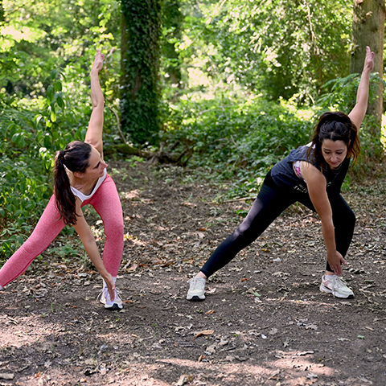

Accompagnement 36 semaines
"Poids juste en douceur"

Le programme le plus complet pour ancrer des nouveaux réflexes durables.
🎯 C’est l’accompagnement parfait si tu veux :
- Perdre du poids progressivement
- Changer tes habitudes en profondeur
- Reconstruire un mode de vie durable
- Travailler sur la mobilité, le renforcement, l’alimentation et le stress sur le long terme
📦 Ce que tu reçois :
- 1 séance individuelle chaque semaine
- 1 journal de suivi
- Suivi hebdomadaire
- Accès WhatsApp 5/7
- Ressources : alimentation saine, réduction du stress, vidéos, recettes
- Programme mouvement & renforcement progressif (évolutif sur 9 mois)
- Programme mobilité et stabilité
- Bilan mensuel + ajustements précis
- Approche globale corps, alimentation, rythme de vie
⭐ Pourquoi choisir Jelynfit Coaching ?
- Spécialiste en remise en forme
- Programmes adaptés à ton niveau, ton énergie et tes besoins
- Approche progressive, sécurisée et bienveillante
- Suivi humain, chaque progrès est mesuré et valorisé
- Tu restes actrice de ton changement à chaque étape
📍 Lieux possibles en présentiel
Mes services d'accompagnement sont disponibles à Saint-Macaire-en-Mauges et
dans un rayon de 30 kilomètres environ, couvrant les principales
communes suivantes :
Cholet, Les Herbiers, Ancenis, Torfou, Tillières, Villedieu-la-Blouère,
La Renaudière, La Romagne, Andrezé, Roussay, Saint-Léger-sous-Cholet,
Saint-André-de-la-Marche, Bégrolles-en-Mauges, Vallet, Beaupréau,
Clisson, Montaigu-Vendée, Saint-Laurent-sur-Sèvre, Mortagne-sur-Sèvre,
Chemillé-en-Anjou.
Si vous êtes en dehors de cette zone ou si votre commune ne figure pas
dans cette liste, n’hésitez pas à me contacter afin d’en discuter.
Chaque situation est unique et peut faire l’objet d’un aménagement
spécifique.
💻 Accompagnement à distance
Le coaching est également possible à distance, où que vous soyez.
Un simple contact par mail ou téléphone permet de définir vos besoins, d’organiser les échanges et de mettre en place l’accompagnement.
✉️ Des questions ou envie de commencer ?
Contacte-moi :
06 73 16 31 14
contact@jelynfitcoaching.fr
Dis-moi simplement où tu en es aujourd’hui, et nous déterminerons ensemble ce qui te conviendra le mieux, c'est sans engagement.
Contacte-moi